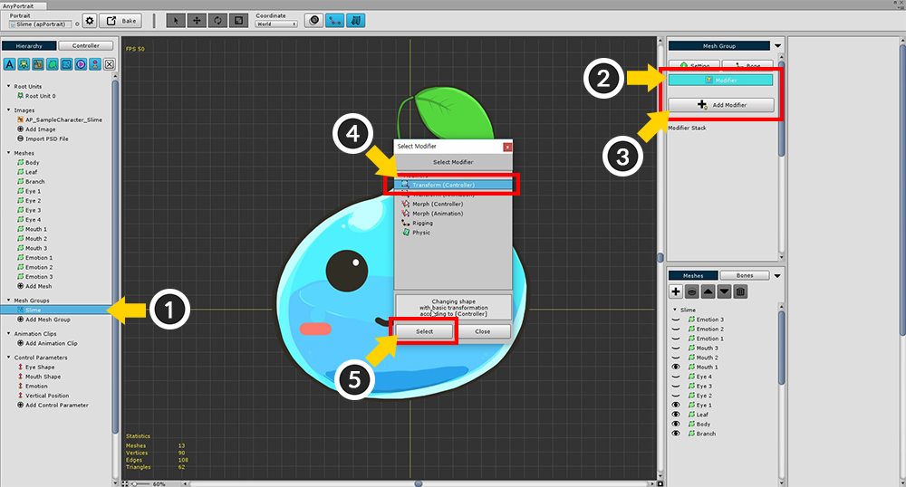
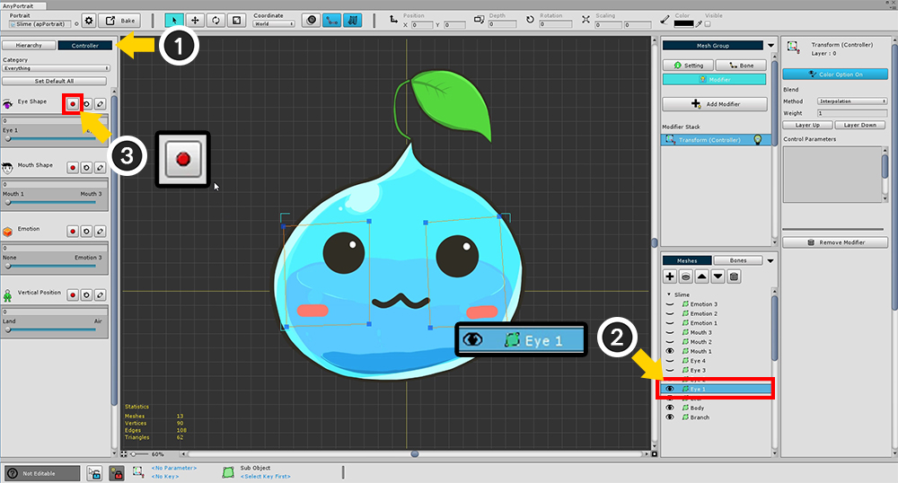
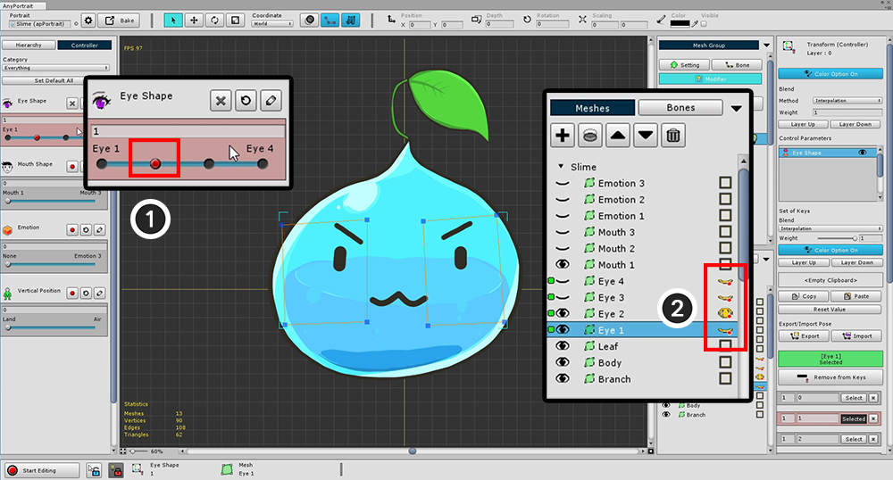
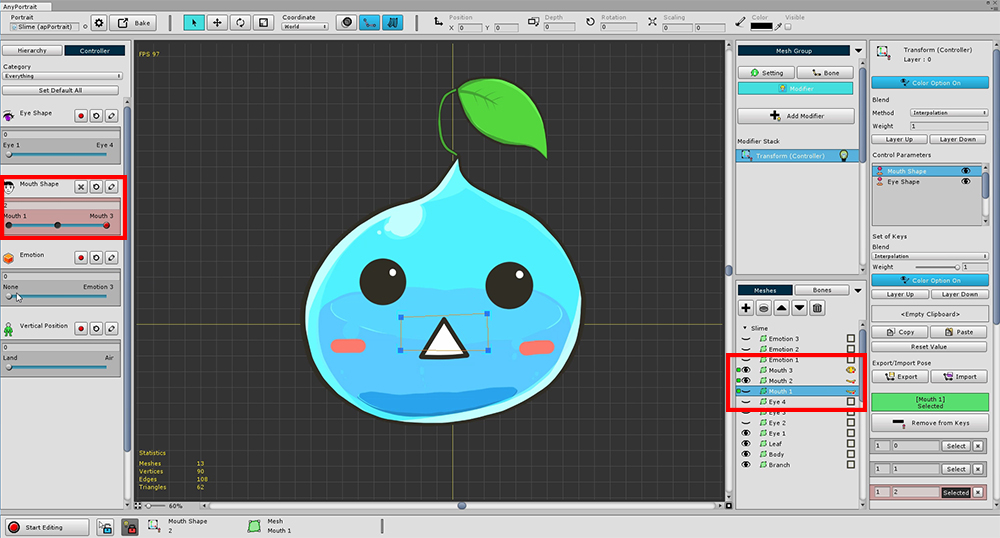

AnyPortrait > Getting Started > 1.6. Changing the face with Transform Modifier
1.6. Changing the face with Transform Modifier
1.1.6
Adding the Modifier of the Mesh Group is the most important process of AnyPortrait.
The modifier's working principle is complex, so we will only cover how to add and use it.
Please check the related page for the type, characteristics and cautions of the modifier.
On this page, the "Transform (Controller)" modifier is used among the various modifiers.
With the "Transform" modifier, you can change the position, size, etc., or change the color and visibility by the Control Parameters.
Therefore, it is suitable to change the facial expression by replacing images.
It is easy to use as the most basic modifier.
(Note that you can also control the color in the "Morph" modifier.)

Select the (1) Slime mesh group created on the previous page.
When you (2) select Modifier menu, you can confirm that no modifier is registered yet.
(3) Press the Add Modifier button to open a dialog that adds a modifier.
(4) Select the "Transform (Controller)" modifier among the various modifiers (5) Press the Select button.

This is the screen you can see after adding a modifier.
(It varies slightly depending on the modifier.)
1. Modifier Stack : Modifiers are calculated sequentially. (The following modifiers are counted first.)
2. Modifier On / Off : You can temporarily disable the modifier during the operation. Click the light bulb icon to turn On / Off.
3. Selected Modifier : The name, icon, and layer position of the currently selected modifier.
4. Color Option On / Off : The Transform / Morph modifier can control the color value. This button determines whether or not to control the color value.
5. Modifier Blend : Determines how the modifier blends with other modifiers.
- Method : The method of merging values. Interpolation and Additive are available.
- Weight : The weight when merging values. It has a value between 0 and 1.
- Layer Up / Down : Changes the modifier calculation order.
6. Control Parameters : Display the registered control parameters as input values.
7. Remove Modifier : Removes the selected modifier.
The modifier consists of a combination of "Input key" and "Modified value".
At this time, corresponding to the "Input key" in the current sample is the Control Parameter, and the "Modified value" is "whether the mesh is colored / rendered".
Therefore, the next task is to select a "Control Parameter as input value" and a "Mesh to be applied modifier" and register together.
Detailed explanation can be found on the related page.

(1) Select the Controller tab.
(2) Select a mesh (Eye1).
With the Controller tab selected, check the Eye Shape parameter you created earlier.
You can see that the Red Recording button appears while selecting the modifier that receives the control parameter as input value.
(3) Press the Record button of the Eye Shape parameter to register it in the modifier.
This will change the screen as follows.

The background of the Control Parameter changes to red, and the new settings appear in the right UI.
This state is that "Control Parameter + Mesh" is registered in the modifier.
Let's register other "Eye-shaped meshes" with the modifier.

(1) Since the "Eye Shape" control parameter is already registered,
(2) Select another eye-shaped mesh (Eye2)
(3) Click the Add to Keys button to register.
In the same way, register all 4 eye-shaped meshes (Eye1, Eye2, Eye3, Eye4).

If you have registered all 4 meshes, Green icons will appear as shown above.
The next task is to actually assign the expression to each value of the control parameter.
When the value of the eye shape parameter is 0, only the Eye1 mesh is displayed,
When the value is 1, only the Eye2 meshes are displayed.

(1) Move the parameter value to 1. The Red Recording button is activated because there is no key at that position.
(2) Press the Record button to generate the key when "Parameter value = 1".
Likewise, (3) move the parameter to 2 and (4) press the Record button to generate the key.
(5) and (6), so that a total of four keys are generated.

If your current AnyPortrait version is v1.1.6 or later, you need to enable Color Option at this step.
To control the mesh's Color, Transparency, and Visibility, the modifier's Color Option must be turned on.
From v1.1.6, the default value of this option has been changed to OFF for optimization.

(1) Turn on the "Color Option" of the modifier.
(2) If the "Color Option" of the registered Control Parameter is off, press the button to turn it on.
(3) Now, "Yellow eye buttons" are displayed to change the rendering of the mesh.
For information on the Color option, please see the related page.

Visibility of the eye meshes is determined by the four keys of the control parameter.
First, (1) move the Control Parameter back to the first position (key value = 0).
(2) Turn On the Yellow eye button of Eye1 mesh and turn off the rest.

Then let's work on the second key.
After (1) moving the Control Parameter to the second position (key value = 1),
(2) Turn On the Yellow eye button of the Eye2 mesh and turn off the rest.


Do the same work with the remaining two keys in the same way to complete the settings for the four facial expressions.

You can also work on the Mouth Shape in the same way as above.
If you have created both eye and mouth expressions, you can test right from the game.
You can run the Bake function, move it to the scene, and test it right in Unity Editor.